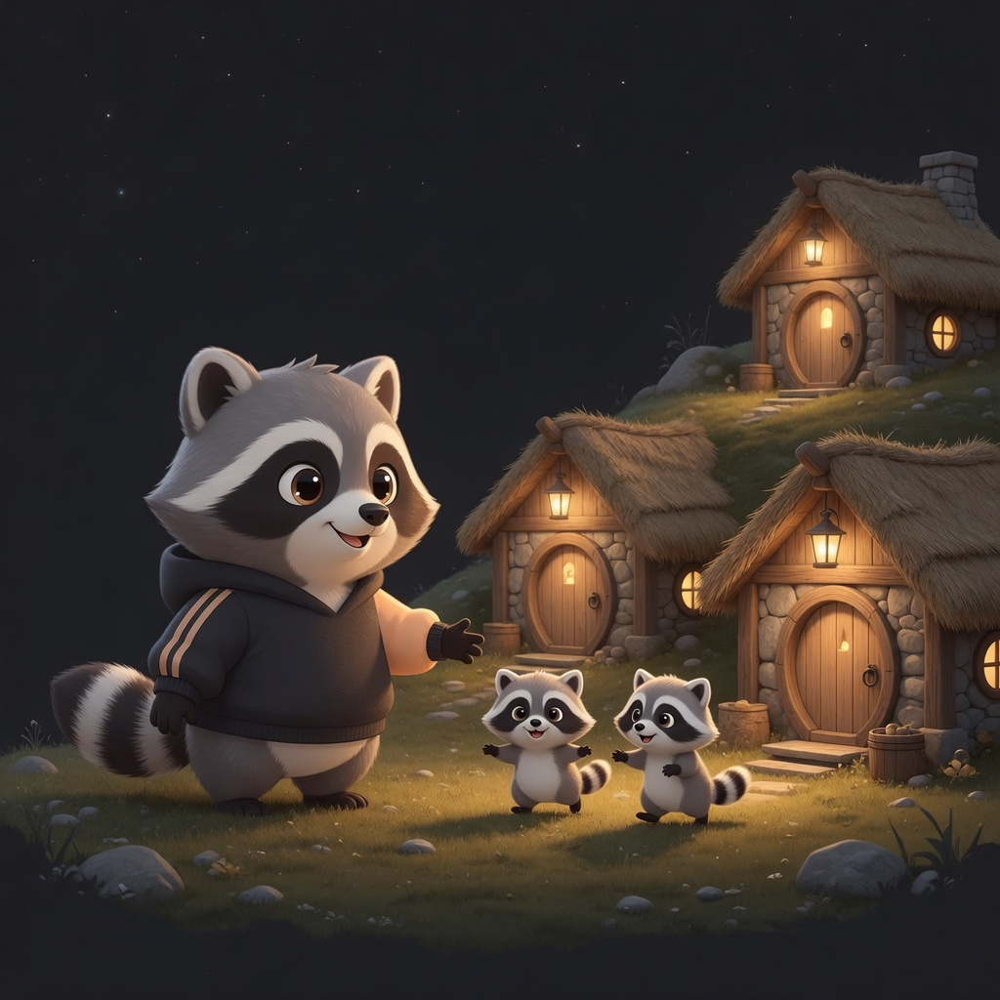

Self-hosted · chat, not a TTY
Your coding agents.
In your pocket.
On your machine.
Raccoon Herder is a chat control plane for coding agents. You talk to them from a phone, tablet, or browser — while the agents stay local children on a Linux box you actually own. Grok, Claude Code, Copilot CLI, Hermes, Pi, and Codex work today; more are coming, and it is not limited to that list.
Why it exists
Most “remote agent” tools either shove a terminal in a browser or send your repo to someone else’s cloud. This is the other path: a real chat UI, structured tools and approvals, and a process that never has to leave your LAN — or a den you spawned for one job.

What you get
- Several live sessions at once, stop and resume without losing the thread.
- Workspace files, git status, slash skills, attachments from camera or paste.
- A PWA you can pin per den — or just open a tab for a twenty-minute job.
- You keep the tokens. No SaaS relay inside this process.
- Secret files (.env, logins) are sealed in the browser. Herder stores ciphertext and never sees the passphrase.
What it is not
- Not a terminal emulator as the product UI.
- Not multi-tenant. Dens don’t see each other.
- Not Docker-in-Docker, and never
docker.sockin a den. - Not a public install yet. We’re still building it; the product is not generally available.